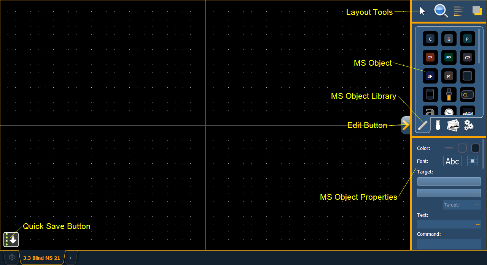

Pressing the edit button on the right hand side of the magic sheet display will open the editing tools.

The main area of the magic sheet will display a grid to aid with layout. The editing tools will be displayed on the right side of the magic sheet. The editing tool window is divided up into three areas: layout tools, the MS Object Library, which is made up of four tabs that contain the MS Objects, and the MS Object Properties.
Note: To see a description of a tool or object, hover your cursor over it. Its title will display after a second or two.
You can drag and drop objects onto the magic sheet, or you can use the layout tools to create arrays of objects.
Note: Holding down [Shift] while placing an object will bypass the snap to grid behavior.